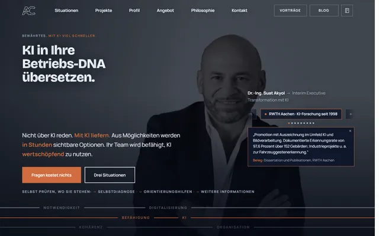

Über diesen Entwurf.
Ein Vorschlag, wie dr-mueller-interim.de aussehen könnte. Ihre Inhalte, neu geordnet und neu gestaltet.
Ihre Inhalte, neu geordnet: alle sechs Leistungen, alle 21 Stationen mit Ausgangssituation, Maßnahmen und Ergebnissen, Tätigkeit, Führung, Arbeitsweise, Buch und Kontakt. Neu geschrieben sind nur Überschriften und kurze Zusammenfassungen.
Werdegang als Zeitleiste: 11 Interim-Mandate und 10 Festanstellungen klar getrennt, filterbar nach Leistungsfeld, jede Leistung zeigt ihre passenden Fallbeispiele.
Schneller, weil leichter: 1 Stylesheet und 1 Skript statt 73 und 60 Dateien auf der Startseite.
Für KI-Suchen lesbar gebaut: Person, Beratung und Mitgliedschaften stehen als strukturierte Daten im Code, damit Google und KI-Assistenten sie im Produktivbetrieb direkt finden.
Pflege per Zuruf: Ein neues Mandat beschreiben Sie in ein paar Sätzen, es erscheint in Zeitleiste, Leistung und Startseite zugleich.
Bitte beachten
Unverbindlicher Entwurf, für Suchmaschinen gesperrt, ausschließlich aus öffentlich verfügbaren Inhalten und Bildern von dr-mueller-interim.de. Keine Verbindung zum offiziellen Auftritt, keine Konkurrenz zum Original, auf Wunsch jederzeit entfernbar.
Wo dieser Entwurf steht.
Von der einfachen Ein-Seiten-Lösung bis zur High-End-Plattform. Danach richten sich Aufwand und Preis.
- Dieser Entwurf (~4,5): alle Leistungs- und Stationsseiten, Zeitleiste mit Filter, das Formular öffnet aber nur das E-Mail-Programm, Fachbeiträge und Rechtstexte verweisen auf das Original.
- Ihr Bestand, neu gebaut (~5): rund 50 Inhaltsseiten aus zwei Vorlagen, Kontaktformular, Fachbeiträge als eigene Seiten.
- Empfehlung (~6,2): dazu ein echtes Formular, Weiterleitungen aller alten Adressen, strukturierte Daten je Station für Suche und KI und eine schlanke Pflege neuer Mandate.
- 8 bis 10 sind der nächste Horizont, kein Rückstand: Online-Terminbuchung, Redaktionssystem, KI-Assistent für Erstfragen oder datensparsame Besucherstatistik, wenn es gebraucht wird.
Was der Entwurf anders macht.
| Merkmal | Bisherige Seite | Dieser Entwurf |
|---|---|---|
| Gestaltung | Theme-Vorlage mit Slider-Erweiterung | eigenes Design aus Logo, Fotos und Farben |
| Einstieg | Slider und sechs Leistungskacheln ohne Text | Porträt, Kernsatz, Kennzahlen, klare Wege |
| Werdegang | 21 Fallbeispiele, Mandate und Festanstellungen gemischt | Zeitleiste, getrennt nach Art, filterbar nach Leistung |
| Leistungen | Stichpunktlisten | Zahlen hervorgehoben, Vorgehen nummeriert, passende Stationen |
| Kontakt | Formular mit Rechenaufgabe gegen Spam | Formular ohne Rechenaufgabe |
| Strukturierte Daten | ein Datensatz vom SEO-Plugin | Person, Beratung und Mitgliedschaften als JSON-LD |
| Sitemap | 183 Adressen, davon 135 Bildseiten | nur echte Inhaltsseiten |
| Mobil | Standardmenü der Vorlage | Glasmenü, Lauf-Band mit Kontakt |
Gemessen, nicht geschätzt.
Startseite, gemessen am 13.10.2026. Bisher: WordPress 6.8 mit Theme-Vorlage, Slider-Erweiterung und SEO-Plugin auf einem nginx-Server.
Sorgenfrei umstellen
Der neue Auftritt läuft zuerst parallel als Vorschau. Die bestehende Seite bleibt unangetastet, wird vollständig gesichert und ist auch nach der Umstellung jederzeit wiederherstellbar. Alle bisherigen Adressen leiten auf die passende neue Seite weiter, damit Verlinkungen und Suchtreffer erhalten bleiben.
Ihre Marke, geschärft.
Bordeaux und Schiefer stammen direkt aus Ihrem Logo. Die vier Pfeile, die sich in der Mitte treffen, tragen die Idee: Veränderung von allen Seiten zum gemeinsamen Ziel.
Für Überschriften: eine Schrift mit Charakter und feinen Details, ruhig in großen Größen. Passt zum promovierten Ingenieur mit Haltung.
Für den Text: sachlich, technisch und gut lesbar, auch am Handy und in Tabellen.
Bis zum Livegang.
- Kontaktformular an Ihr Postfach anbinden, mit Spamschutz ohne Rechenaufgabe.
- Impressum und Datenschutz mit Ihren geprüften Texten übernehmen.
- Fachbeiträge und Podcast als eigene Seiten übernehmen.
- Nutzungsrechte der Stockfotos für die neue Seite prüfen.
- Bildseiten und Testseiten aus dem Netz nehmen, alte Adressen weiterleiten.
- Eigene Domain umstellen und für Suchmaschinen freigeben.

Dr.-Ing. Suat Akyol.
Interim Manager für technische Mittelständler, Kollege in der DDIM. Diesen Entwurf habe ich mit meinem KI-Team gebaut. Anmerkungen gern an contact@akyol.de.
akyol.de